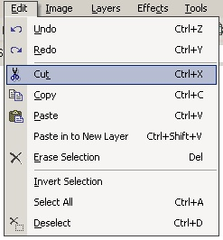

Cut Operation
|
 The Cut Operation (Edit-->Cut) allows for the removal of a selected portion of the active layer. You can select a portion of the layer using either the Rectangle Select or the Lasso Select. Once the Cut Operation is executed, a copy of the selected region is sent to the clipboard while the selected region upon the layer becomes 100% transparent. In other words, the selected region is 'cut' from the layer. To better illustrate the cut operation, consider the images below. |
|
|
|
| This image consists of two layers. Notice on the topmost layer (the graphic closest to you), there is a rectangular selection region. | Once the selected region is 'cut', you can see the layer underneath (i.e., the cut region is 100% transparent). The part that was cut away is now stored on the clipboard. |